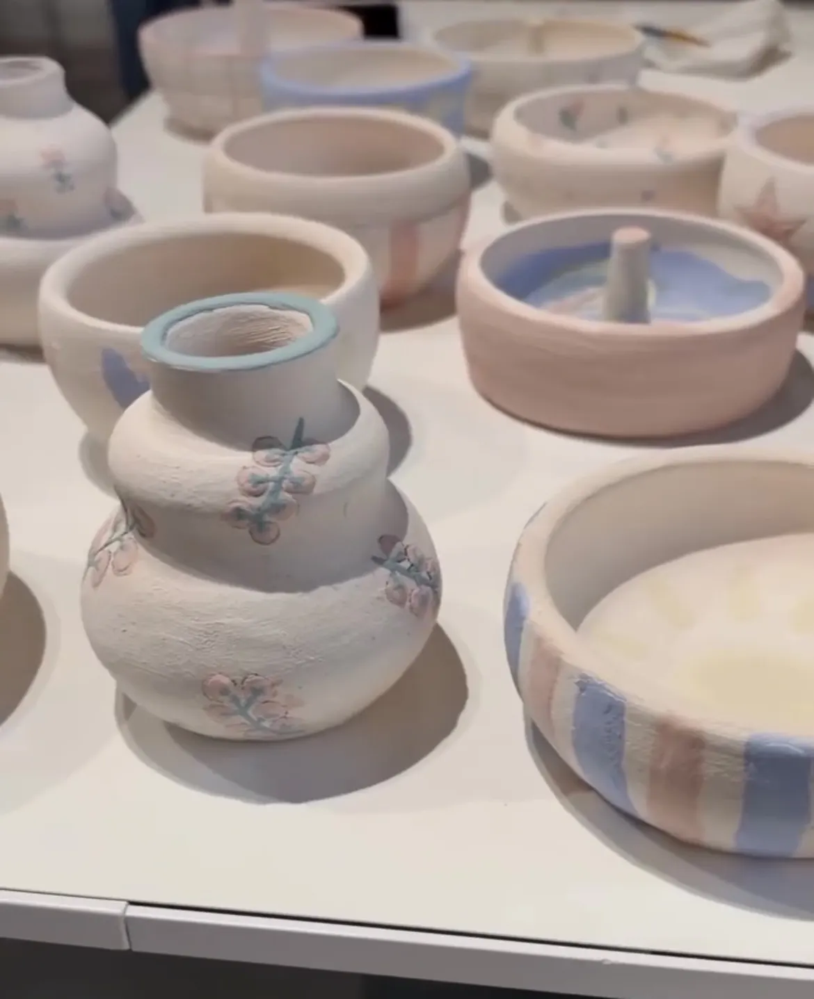
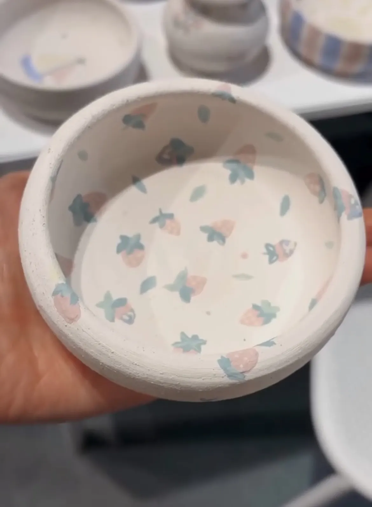

Ceramic Painting Workshops
Come hang out with us at a cafe or wine bar, sip a drink, and paint some ceramics! I make every piece by hand. You just bring yourself, some good vibes, and optionally some friends :)
After the workshop I'll take your piece to get fired, and you can pick it up at the same venue two weeks later.
For upcoming workshops, check Luma or email alexkoe2001@gmail.com.
From past workshops

